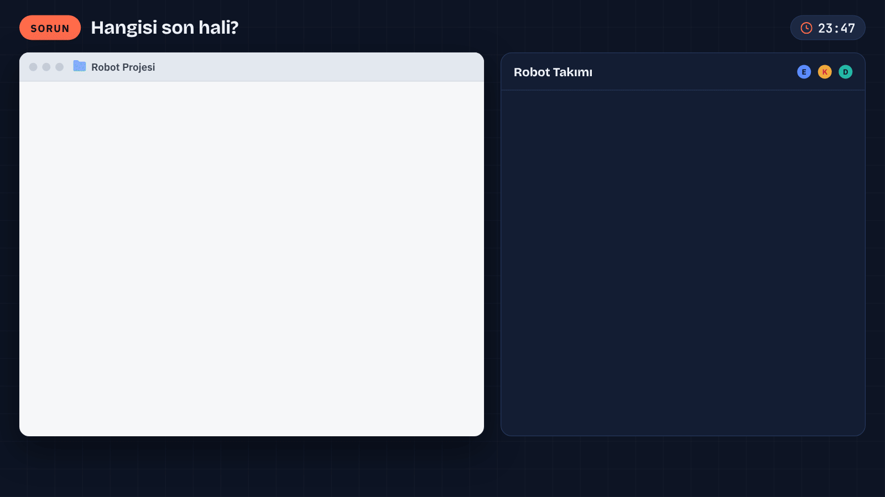
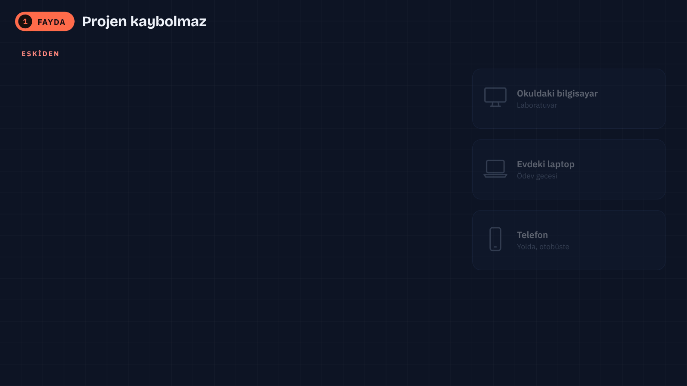
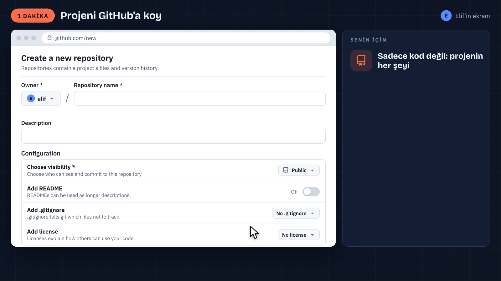
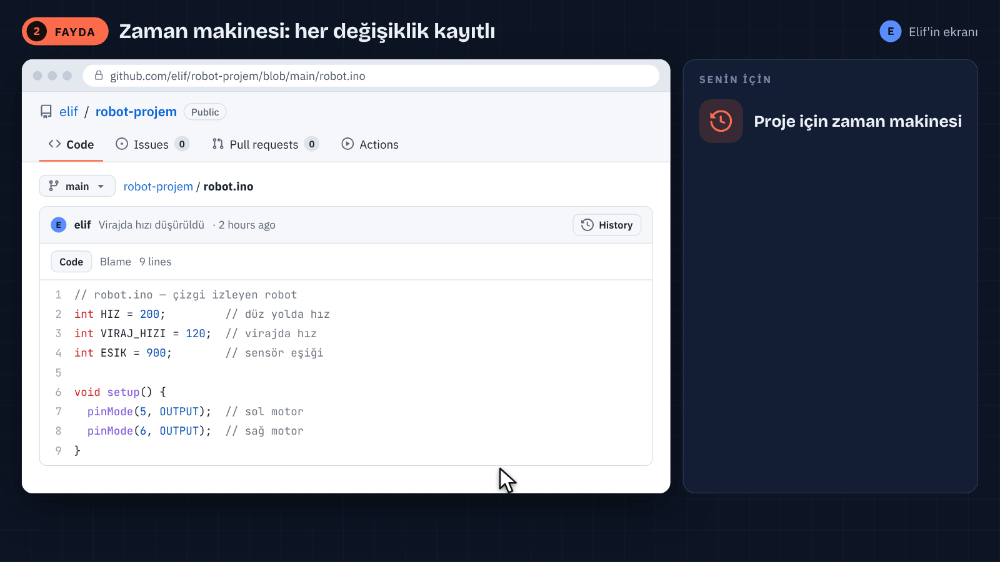
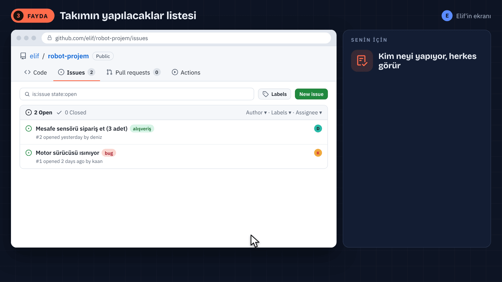
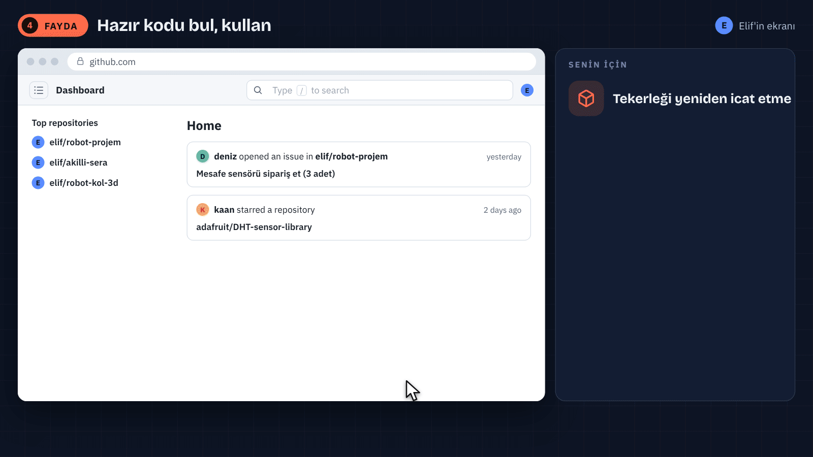
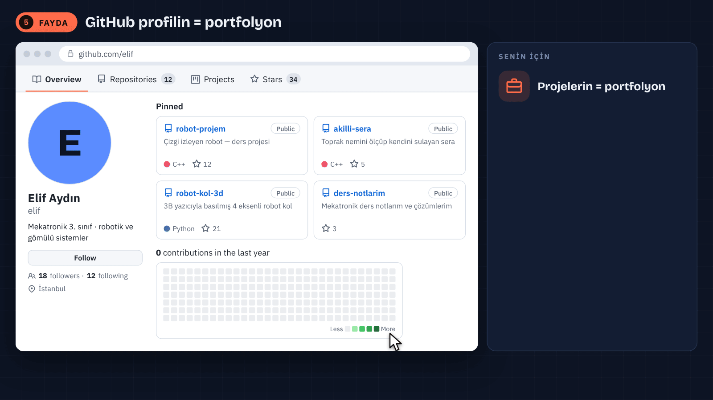
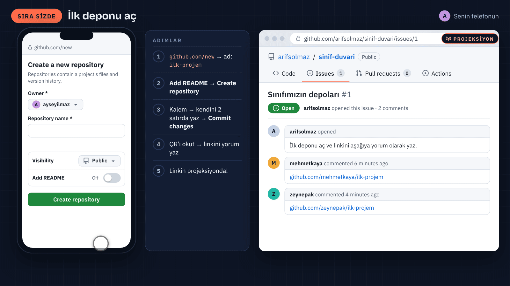
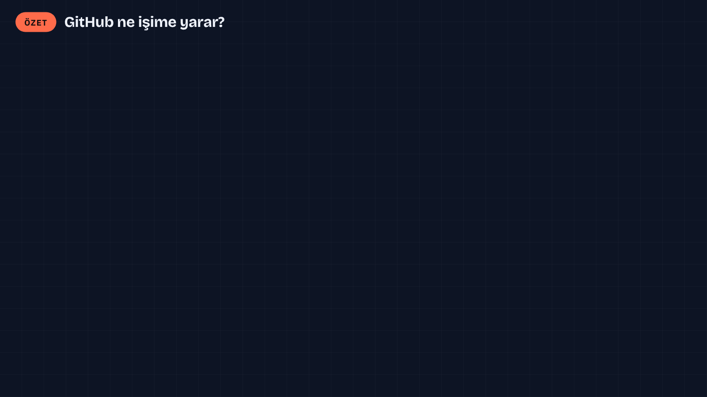

MEKATRONİK · GITHUB'A GİRİŞ · 45 DAKİKA
GitHub ne işime yarar?
Projeni kaybetme, takımınla düzenli çalış, yaptıklarını göster. Terminal yok: her şey tarayıcıda.
Arif Solmaz · İSTÜN Mekatronik Mühendisliği
Açılış · 7 dk
Dağınık klasör sorunu ve GitHub nedir?
Altı fayda · 24 dk
Her biri: animasyon + canlı gösterim
Sıra sizde · 9 dk
Telefondan ilk deponu aç
Kapanış · 5 dk
Özet ve bu haftanın görevi
Telefonunuz ve GitHub hesabınız hazır olsun: dersin sonunda ilk deponuzu açacaksınız.

GITHUB NEDİR?
Projelerin için internette bir klasör, fazlası da var
01
Bir klasör
Kod, devre şeması, rapor, fotoğraf: hepsi bir yerde, internette.
02
Bir zaman makinesi
Her değişiklik kayıtlı; eski hâline her zaman bakabilirsin.
03
Bir buluşma yeri
Takımın yapılacaklar listesi ve yaptıklarını gösterdiğin vitrin.
Terminal yok, komut yok, kod bilgisi gerekmez: bugün her şey tarayıcıda.
repository
projenin internetteki klasörü
dosyalar + bütün geçmişi
commit
bir kayıt anı
yanında kısa bir not: ne değişti?
issue
yapılacak iş ya da hata notu
numara alır: #1, #2…
README
projenin vitrini
ne, neden, nasıl: ilk okunan dosya






FAYDA 6 · GITHUB EDUCATION
Öğrenciysen çoğu şey ücretsiz
GitHub Copilot Student
Kod yazarken öneri veren yapay zekâ yardımcısı.
GitHub Pro
Öğrenci olduğun sürece ücretsiz.
70'ten fazla iş ortağı teklifi
Tasarım, bulut ve öğrenme araçlarında öğrenciye özel teklifler.
SIRA SİZDE · 9 DAKİKA
İlk deponu aç
- github.com/new → ad: ilk-projem
- Add README: On → Create repository
- README'deki kalem → kendini 2 satırda yaz → Commit changes
- QR'ı okut → deponun linkini yorum olarak yaz → Comment
Sınıf sayfası: github.com/arifsolmaz/
sinif-duvari/issues/1


BU HAFTA
Bir projeni GitHub'a koy
1
Bir proje seç
Robot, ödev ya da kulüp projesi: kod, şema, fotoğraf.
2
README yaz
Ne yapıyor, malzemeler, nasıl çalışıyor, bir fotoğraf.
3
Linkini paylaş
Sınıf sayfasına yorum olarak yaz.
Bir adım daha: GitHub Skills · Introduction to GitHub, tarayıcıda, bir saatten kısa · github.com/skills/introduction-to-github
Teşekkürler
repository · commit · issue · README
Sorular?